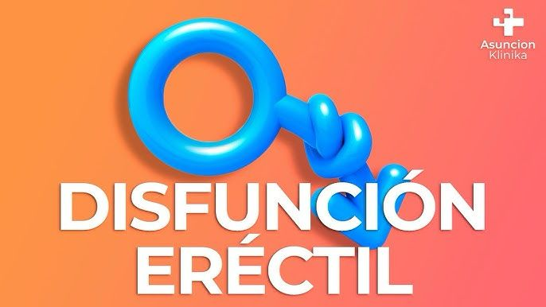
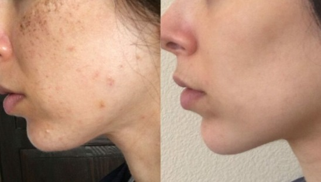
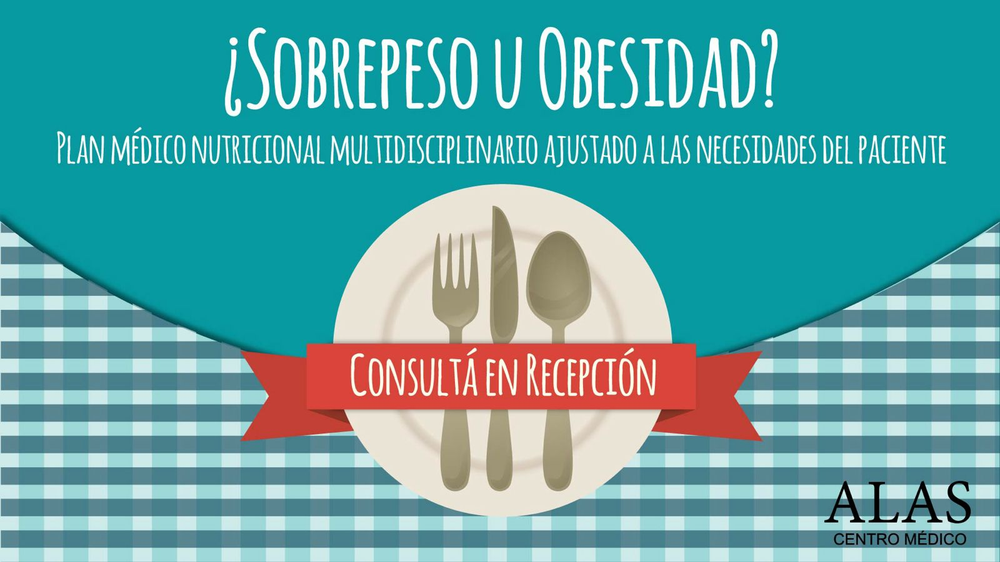
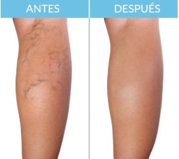
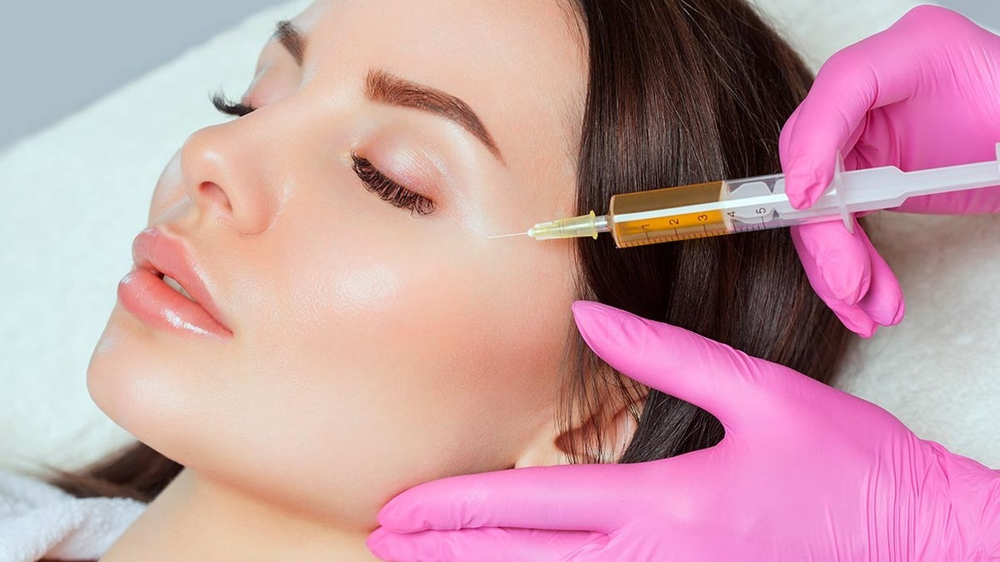
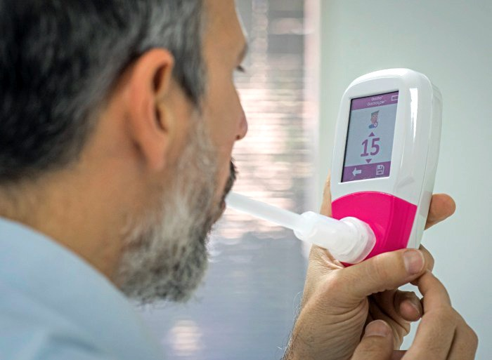
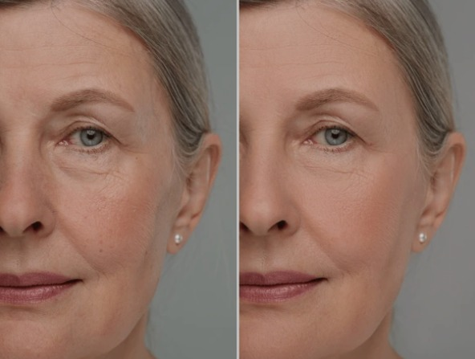

BIENVENIDOS
a la
COMUNIDAD ALAS
Bienvenido a Centro Médico ALAS
Descubrí nuestros tratamientos y resultados. Consultá sin cargo y reservá tu turno.
Servicio de Sexualidad
Disfunción eréctil, eyaculación precoz y falta de deseo sexual.
La disfunción eréctil es la dificultad de lograr o mantener una erección suficiente para una relación sexual normal.
¿Tienes eyaculación precoz? Ocurre cuando no puedes controlar la eyaculación o sucede menos de un minuto después de la penetración.
¿Tienes falta de deseo sexual? Muchas veces es resultado de ansiedad, inhibición, problemas hormonales (baja testosterona) o exceso de cortisol por estrés.
¡Consulta, podemos ayudarte!
WhatsAppTratamientos
Soluciones modernas para el cuidado de la piel y el bienestar. Glucosamina, melatonina, meso-roller y meso-lifting para rejuvenecer y mejorar tu salud.
Solicitar informaciónPlan nutricional integral multidisciplinario
El equipo médico se ajustará a las necesidades del paciente , con una dieta personalizada y apoyatura psicológica . De acuerdo a la necesidad se utilizarán expansores gástricos , anorexigenos no anfetaminicos , fitoterapicos o terapéuticas en base a medicina biológica . Los Controles quincenales y mensuales con el equipo médico ayudarán a consolidar el descenso de peso .
Solicitar informaciónFlebología / Fleboestética
Tratamientos para varices y arañitas. Consultá por diagnóstico y soluciones estéticas y médicas para tus piernas.
Consultar flebologíaPRP
 Solicitar informaciónTest de Helicobacter pylori por aire espirado
 Solicitar informaciónMedicina Estética
Opciones quirúrgicas y no quirúrgicas para sentirte más joven y vital. Consultá sin cargo y reservá tu turno.
Solicitar turnoContacto
Centro Médico ALAS
San Luis 2740 - Balvanera - CP: 1186
Tel/fax: 4-9633434/7755
Ciudad Autónoma de Buenos Aires